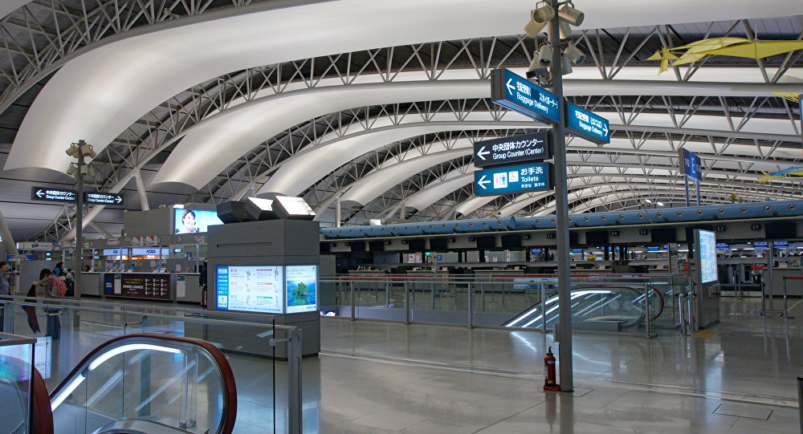

La mayoría de los visitantes llegan a Japón por el aeropuerto internacional de Narita (NRT), que cuenta con unas cómodas y modernas instalaciones con un buen diseño y todo tipo de facilidades y mucho por ver y hacer. En las dos
terminales principales hay numerosas tiendas, restaurantes, zonas de espera tranquilas y miradores, y se ofrecen actividades de entretenimiento.
El Aeropuerto Internacional de Narita, que fue inaugurado en 1978, a menudo se conoce como la puerta de entrada del mundo a Tokio. Aunque se encuentra relativamente lejos del centro de Tokio, en la ciudad de Narita en la prefectura
de Chiba, su excelente red de transporte asegura un viaje fácil desde, o hasta, el centro de la ciudad.
Aeropuerto Internacional Haneda de Tokio
Durante gran parte de su historia reciente, el Aeropuerto de Haneda –oficialmente el Aeropuerto Internacional de Tokio– se utilizaba principalmente para vuelos nacionales dentro de Japón, pero la situación cambió con la apertura
de la nueva terminal internacional (la Terminal 3) en 2010. Ahora, Haneda es, con mucho, el aeropuerto más práctico para llegar a Tokio. Las tres terminales nacionales cuentan con rutas de vuelo por todo Japón y a todo el mundo.
El Aeropuerto de Haneda se encuentra entre los aeropuertos con mayor tráfico aéreo del mundo. Haneda tambien ha sido objeto de reformas en los últimos años que han atraído a excelentes tiendas, restaurantes y otras atracciones,
y el aeropuerto está siendo cada vez mejor. *Las instalaciones asociadas a los vuelos internacionales en la Terminal 2 no están en funcionamiento en la actualidad.
Aeropuerto Internacional Kansai de Tokio

El Aeropuerto Internacional de Kansai se encuentra construido sobre el mar, en la Bahía de Osaka, en Japón, y es el segundo más transitado de todo el país. El rasgo más característico de este aeropuerto japonés es que se encuentra
construido sobre una isla artificial.
Datos Generales
-
Ubicacion:
1-banchi, Senshu-kuko Kita, Izumisano-shi, Osaka 549-8501, Japón
-
Telefono:
(81) 724 552 500
Aeropuerto Internacional Chubu Centrair de Tokio
El Aeropuerto Internacional Chubu Centrair, llamado también Aeropuerto de Japón Central e inaugurado el 17 de febrero de 2005, es una aeroisla que sirve al área urbana de Nagoya. Es uno de los más importantes de Japón y de los
más modernos del mundo. Si bien opera con varios vuelos domésticos, la mayoría son internacionales, con destinos en China, Corea del Sur, el sudeste asiático, Medio Oriente, Europa y Estados Unidos.
Aeropuerto Internacional New Chitose de Tokio
El Aeropuerto New Chitose se encuentra en la isla de Hokkaido, cerca de Sapporo. Dentro de los aeropuertos de Japón este es el quinto más importante debido a su flujo de gente, el cual acarrea a más de 20 millones de personas por
año. Su importancia se debe también por recibir grandes cantidades de cargas al año, su labor se destaca en ser un aeropuerto de recepción de cargas con más de 300,000 toneladas por año.
Aeropuerto Internacional Naha de Tokio
El aeropuerto de Naha ubicado en la isla de Okinawa es un aeropuerto de segunda clase y se encuentra en el séptimo lugar dentro de los aeropuertos de Japón más transitados con los más de 17 millones de personas que pasan por sus
terminales anualmente. La función principal del Aeropuerto de Naha es recibir vuelos internacionales, vuelos de escala y de acarreo, gracias a esto el aeropuerto de Naha recibe aproximadamente 150 vuelos al día.